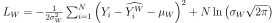
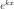
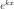

Démonstration du théorème de la densité des réseaux de neurones#
Formulation du problème de la régression#
Soient deux variables aléatoires continues
 quelconque,
la résolution du problème de régression
est l’estimation de la fonction .
Pour cela, on dispose d’un ensemble de points
quelconque,
la résolution du problème de régression
est l’estimation de la fonction .
Pour cela, on dispose d’un ensemble de points
 .
.
Soit  une fonction, on définit
.
On appelle aussi
une fonction, on définit
.
On appelle aussi  la valeur prédite pour
la valeur prédite pour  .
On pose alors
.
On pose alors
 .
.
Les résidus sont supposés
i.i.d. (identiquement et indépendemment distribués),
et suivant une loi normale
La vraisemblance d’un échantillon
 ,
où les
,
où les  sont indépendantes entre elles et suivent la loi de densité
sont indépendantes entre elles et suivent la loi de densité
 est la densité du vecteur
est la densité du vecteur  qu’on exprime
comme suit :
qu’on exprime
comme suit :
La log-vraisemblance de l’échantillon s’écrit
.
Les estimateurs du maximum de vraisemblance
pour  et sont (voir [Saporta1990]) :
et sont (voir [Saporta1990]) :
L’estimateur de  désirée est de préférence
sans biais () et de variance minimum,
par conséquent, les paramètres
désirée est de préférence
sans biais () et de variance minimum,
par conséquent, les paramètres  qui maximisent la vraisemblance sont :
qui maximisent la vraisemblance sont :
(1)#
Réciproquement, on vérifie que si  vérifie
l’équation (1) alors l’estimateur défini par
vérifie
l’équation (1) alors l’estimateur défini par
 est sans biais
Il suffit pour s’en convaincre de poser
est sans biais
Il suffit pour s’en convaincre de poser
 avec
avec
 et de vérifier que la valeur optimale pour
et de vérifier que la valeur optimale pour
 est
.
L’estimateur minimise la vraisemblance .
Cette formule peut être généralisée en faisant une autre hypothèse
que celle de la normalité des résidus (l’indépendance étant conservée),
l’équation (1)
peut généralisée par (2).
est
.
L’estimateur minimise la vraisemblance .
Cette formule peut être généralisée en faisant une autre hypothèse
que celle de la normalité des résidus (l’indépendance étant conservée),
l’équation (1)
peut généralisée par (2).
(2)#
Où la fonction  est appelée fonction d’erreur.
est appelée fonction d’erreur.
Densité des réseaux de neurones#
L’utilisation de réseaux de neurones s’est considérablement développée depuis que l’algorithme de rétropropagation a été trouvé ([LeCun1985], [Rumelhart1986], [Bishop1995]). Ce dernier permet d’estimer la dérivée d’un réseau de neurones en un point donné et a ouvert la voie à des méthodes classiques de résolution pour des problèmes d’optimisation tels que la régression non linéaire.
Comme l’ensemble des fonctions polynômiales,
l’ensemble des fonctions engendrées par des réseaux de neurones
multi-couches possède des propriétés de densité
et sont infiniment dérivables. Les réseaux de neurones comme
les polynômes sont utilisés pour modéliser la fonction
de l’équation (2).
Ils diffèrent néanmoins sur certains points
Si une couche ne contient que des fonctions de transfert bornées comme la fonction sigmoïde, tout réseau de neurones incluant cette couche sera aussi borné. D’un point de vue informatique, il est préférable d’effectuer des calculs avec des valeurs du même ordre de grandeur. Pour un polynôme, les valeurs des termes de degré élevé peuvent être largement supérieurs à leur somme.
Un autre attrait est la symétrie dans l’architecture d’un réseau de neurones, les neurones qui le composent jouent des rôles symétriques (corollaire familles libres. Pour améliorer l’approximation d’une fonction, dans un cas, il suffit d’ajouter un neurone au réseau, dans l’autre, il faut inclure des polynômes de degré plus élevé que ceux déjà employés.
Théorème T1 : densité des réseaux de neurones (Cybenko1989)
[Cybenko1989]
Soit l’espace des réseaux de neurones à
 entrées et
entrées et  sorties, possédant une couche cachée dont la
fonction de seuil est une fonction sigmoïde
sorties, possédant une couche cachée dont la
fonction de seuil est une fonction sigmoïde
 ,
une couche de sortie dont la fonction de seuil est linéaire
Soit l’ensemble des fonctions continues de
,
une couche de sortie dont la fonction de seuil est linéaire
Soit l’ensemble des fonctions continues de
 avec
compact muni de la norme
Alors est dense dans .
avec
compact muni de la norme
Alors est dense dans .
La démonstration de ce théorème nécessite deux lemmes.
Ceux-ci utilisent la définition usuelle du produit scalaire
sur  défini par
défini par
 .
et la norme infinie :
.
et la norme infinie :
 .
Toutes les normes sont
équivalentes
sur .
.
Toutes les normes sont
équivalentes
sur .
Corollaire C1 : approximation d’une fonction créneau
Soit  ,
alors :
,
alors :
![\begin{array}{l}
\forall \varepsilon > 0, \; \forall \alpha>0, \; \exists n \in \N^*, \;
\exists \vecteur{x_1}{x_n}
\in\left( \R^p\right) ^{n}, \; \exists
\vecteur{\gamma_1}{\gamma_n} \in \R^n \text{ tels que } \forall x\in \R^p, \\ \\
\begin{array}{ll}
& \left| \underset{i=1}{\overset{n}{\sum}}\dfrac{\gamma_i}
{1+e^{\left\langle x_{i},x\right\rangle +b_{i}}}-\indicatrice{x\in C
}\right| \leqslant1 \\ \\
\text{ et } & \underset{y\in Fr\left( C\right) }{\inf }\left\| x-y\right\| >
\alpha\Rightarrow\left| \underset{i=1}{\overset
{n}{\sum}}\dfrac{\gamma_i}{1+e^{\left\langle x_{i},x\right\rangle +b_{i}}}
-\indicatrice{x\in C}\right| \leqslant\varepsilon
\end{array}
\end{array}](../../_images/math/81b046a7c16f8c6e2ee3affefaa37255894b6fdf.svg)
Démonstration du corollaire
Partie 1
Soit  la fonction définie par :
avec
la fonction définie par :
avec  et .
A , fixé, ,
on cherche
et .
A , fixé, ,
on cherche  tel que :
tel que :

Partie 2
Soit et  ,
,
On pose  d’après sa définition,
d’après sa définition,  .
.
Pour  obtenu dans la partie précédente :
obtenu dans la partie précédente :

Partie 3
Soit  la fonction définie par :
la fonction définie par :

La fonction  est un polynôme en  dont le
discriminant est positif. Par conséquent la fraction
rationnelle
est un polynôme en  dont le
discriminant est positif. Par conséquent la fraction
rationnelle  admet une décomposition en éléments
simples du premier ordre
et il existe quatre réels
admet une décomposition en éléments
simples du premier ordre
et il existe quatre réels  , ,
, ,
 ,
,  tels que :
tels que :

Par conséquent :

Il existe  tel qu’il soit possible d’écrire sous la forme :
tel qu’il soit possible d’écrire sous la forme :

Corollaire C2 : approximation d’une fonction indicatrice
Soit  compact, alors :
compact, alors :
![\begin{array}{c}
\forall\varepsilon>0, \; \forall\alpha>0, \; \exists\left( x_{1},...,x_{n}\right)
\in\left( \R^{p}\right)^{n}, \; \exists\left(
b_{1},...,b_{n}\right) \in\R^n \text{ tels que } \forall x\in\R^{p},\\ \\
\begin{array}{ll}
& \left| \sum_{i=1}^n \dfrac{\gamma_i}
{1+e^{\left\langle x_{i},x\right\rangle +b_{i}}}-\indicatrice{x\in C
}\right| \leqslant1+2\varepsilon^2\\ \\
\text{ et } & \underset{y\in Fr\left( C\right) }{\inf}\left\| x-y\right\|
>\alpha\Rightarrow\left| \sum_{i=1}^n
\dfrac{\gamma_i}{1+e^{\left\langle x_{i} ,x\right\rangle +b_{i}}}-
\indicatrice{x\in C}\right| \leqslant \varepsilon
\end{array}
\end{array}](../../_images/math/2438971c64fbcb5fa05cab6a1210f152a5cf6ed3.svg)
Démonstration du corollaire
Partie 1
Soit  et
et 
Le premier lemme suggère que la fonction cherchée pour ce lemme
dans le cas particulier  est :
est :
![\begin{array}{rcl}
f\left( y_{1},...,y_{p}\right) &=& \prod_{i=1}^p \dfrac
{1}{1+e^{-ky_{i}}} \prod_{i=1}^p\dfrac{1}{1+e^{-k\left( 1-y_{i}\right)
}}+ \\
&& \quad \left( \prod_{i \neq j}
\dfrac
{1}{1+e^{-ky_{i}}}\right) \left( \prod_{i \neq j}
\dfrac{1}{1+e^{-k\left( 1-y_{i}\right) }}\right)
\dfrac{1}{1+e^{k\left( 1-y_{j}\right) }}\dfrac{1}{1+e^{-k\left( 2-y_{j}\right)
}}\\
%
&=& \left( \prod_{i \neq j} \dfrac{1}{1+e^{-ky_{i}}}\right)
\left( \prod_{i \neq j} \dfrac{1}{1+e^{-k\left( 1-y_{i}\right)
}}\right) \\
&& \quad \left( \dfrac{1}{1+e^{-ky_{j}}}\dfrac{1}{1+e^{-k\left( 1-y_{j}\right) }}
+\dfrac {1}{1+e^{k\left( 1-y_{j}\right) }}
\dfrac{1}{1+e^{-k\left(2-y_{j}\right) }}\right)
\\
%
&=& \left( \prod_{i \neq j} \dfrac{1}{1+e^{-ky_{i}}}\right)
\left( \prod_{i \neq j} \dfrac{1}{1+e^{-k\left( 1-y_{i}\right) }}\right) \\
&& \quad \left[\dfrac{1}{1+e^{-ky_{j}}}\left( \dfrac{1}{1+e^{-k\left( 1-y_{j}\right) }
}+1-1\right) +\left( 1-\dfrac{1}{1+e^{-k\left( 1-y_{j}\right) }}\right)
\dfrac{1}{1+e^{-k\left( 2-y_{j}\right) }}\right]
\end{array}](../../_images/math/31b8a9555c4dba90d00ad1edbf46810e89388446.svg)
Pour , on a :
![\begin{array}{rcl}
f\left( y_{1},...,y_{p}\right) &=& \left( \prod_{i\neq j}
\dfrac{1}{1+e^{-ky_{i}}}\right) \left( \prod_{i\neq j}
\dfrac{1}{1+e^{-k\left( 1-y_{i}\right) }}\right)
\\
&& \quad \left( \dfrac{1}%
{1+e^{-ky_{j}}}+\dfrac{1}{1+e^{-k\left( 2-y_{j}\right) }}+
\underset {\leqslant\varepsilon^{2}}{\underbrace{\dfrac{1}{1+e^{k\left( 1-y_{j}\right)
}}\dfrac{1}{1+e^{-ky_{j}}}}}-\underset{\leqslant\varepsilon^{2}}%
{\underbrace{\dfrac{1}{1+e^{-k\left( 1-y_{j}\right) }}\dfrac{1}%
{1+e^{-k\left( 2-y_{j}\right) }}}}\right)
\end{array}](../../_images/math/1e1d56b20466da1aca0a74a8938cb1a4800d2af7.svg)
Par conséquent, il est facile de construire la fonction cherchée pour tout compact connexe par arc.
Partie 2
Si un compact n’est pas connexe par arc,
on peut le recouvrir par une somme finie de
compacts connexes par arcs et disjoints
 de telle sorte que :
de telle sorte que :

Démontration du théorème de densité des réseaux de neurones
Partie 1
On démontre le théorème dans le cas où .
Soit une fonction continue du compact
 et soit .
et soit .
On suppose également que est positive, dans le cas contraire, on pose
 .
.
Si est nulle, alors c’est fini, sinon, on pose  .
.
 existe car est continue et
est compact (de même, existe également).
existe car est continue et
est compact (de même, existe également).
On pose .
 est compact car il est l’image
réciproque d’un compact par une fonction continue et compact.
est compact car il est l’image
réciproque d’un compact par une fonction continue et compact.

Par construction, et on définit~:
D’où~:
![\begin{eqnarray}
f\left( x\right) -g_{\varepsilon}\left( x\right) &=&
f\left( x\right)-\varepsilon\overset{\frac{M}{\varepsilon}}{\sum_{k=0}}
\indicatrice{x\in C_{k}} \nonumber
= f\left( x\right) -\varepsilon \overset{\frac{M}{\varepsilon}}
{\sum_{k=0}}\indicatrice
{ f\pa{x} \supegal k \varepsilon } \nonumber \\
&=& f\left( x\right) -\varepsilon\left[ \dfrac{f\left( x\right) }
{\varepsilon}\right] \quad \text{ (partie entière)}\nonumber \\
& \text{d'où }& 0\leqslant f\left( x\right) -g_{\varepsilon}\left( x\right) \leqslant \frac{\varepsilon}{4}
\end{eqnarray}](../../_images/math/6df132dfc8913a3bd240780d3717400d3f18247d.svg)
Comme est continue sur un compact, elle est uniformément continue sur ce compact :

Par conséquent :

D’après le second lemme, on peut construire des fonctions telles que :

On en déduit que :
![\begin{array}{rcl}
\left| f\left( x\right) -\varepsilon\overset{\frac{M}{\varepsilon}}
{\sum_{k=0}}h_{k}\left( x\right) \right| &\leqslant&
\left| f\left( x\right) -g_{\varepsilon}\left( x\right) \right|
+\left|g_{\varepsilon}\left( x\right) -\varepsilon
\overset{\frac{M}{\varepsilon}}{\sum_{k=0}}h_{k}\left( x\right) \right| \\
&\leqslant& \varepsilon+ \varepsilon^2 \left[ \dfrac{M}{\varepsilon}\right] + 2\varepsilon^2 \\
&\leqslant& \varepsilon\left( M+3\right)
\end{array}](../../_images/math/9e3bca230dd2e6267a5bf8b0fb764b710ef20940.svg)
Comme  est de la forme désirée, le théorème est démontré dans le cas .
est de la forme désirée, le théorème est démontré dans le cas .
Partie 2
Dans le cas , on utilise la méthode précédente pour chacune des projections de
dans un repère orthonormé de  . Il suffit de
sommer sur chacune des dimensions.
. Il suffit de
sommer sur chacune des dimensions.
Ce théorème montre qu’il est judicieux de modéliser la fonction
dans l’équation (2)
par un réseau de neurones puisqu’il possible de s’approcher d’aussi
près qu’on veut de la fonction ,
il suffit d’ajouter des neurones sur la couche cachée du réseau.
Ce théorème permet de déduire le corollaire suivant :
Corollaire C3 : famille libre de fonctions
Soit  l’ensemble des fonctions continues de
l’ensemble des fonctions continues de
 avec
compact muni de la norme :
Alors l’ensemble
avec
compact muni de la norme :
Alors l’ensemble  des fonctions sigmoïdes :
des fonctions sigmoïdes :

est une base de .
Démonstration du corollaire
Le théorème de densité montre que la famille
est une famille génératrice. Il reste à montrer que c’est une
famille libre. Soient  et
et
 vérifiant :
vérifiant :
 .
Soit
.
Soit  , il faut montrer que :
, il faut montrer que :
(3)#
C’est évidemment vrai pour  .
La démonstration est basée sur un raisonnement par récurrence,
on suppose qu’elle est vraie pour
.
La démonstration est basée sur un raisonnement par récurrence,
on suppose qu’elle est vraie pour  ,
démontrons qu’elle est vraie pour
,
démontrons qu’elle est vraie pour  .
On suppose donc .
S’il existe
.
On suppose donc .
S’il existe  tel que ,
la fonction
est une constante, par conséquent, dans ce cas le corollaire est
est vrai pour . Dans le cas contraire,
.
On définit les vecteurs
tel que ,
la fonction
est une constante, par conséquent, dans ce cas le corollaire est
est vrai pour . Dans le cas contraire,
.
On définit les vecteurs  et
et
 .
On cherche à résoude le système de équations à inconnues :
.
On cherche à résoude le système de équations à inconnues :
(4)#
On note le vecteur
 et la matrice :
et la matrice :

L’équation (4) est équivalente à l’équation matricielle : . On effectue une itération du pivot de Gauss. (4) équivaut à :

On note  et
et
 , les matrices :
, les matrices :

Donc (4) est équivalent à :
(5)#
Il est possible de choisir  de telle sorte qu’il existe une suite
de telle sorte qu’il existe une suite  avec et vérifiant :
avec et vérifiant :
On définit :

On vérifie que :
On obtient, toujours pour (4) :
(6)#
![\begin{eqnarray}
&\Longleftrightarrow& \left\{ \begin{array}{cclc}
\lambda_1 m_{11}\pa{\alpha} &+&
\lambda_2 m_{12}\pa{\alpha} + \ldots + \lambda_N m_{1N}\pa{\alpha} &= 0 \\
0 &+& \cro{m_{11}\pa{\alpha} M_* -
\pa{ L_* + \pa{ \Delta_*\pa{\alpha} - L_* } } }
\Lambda_* & = 0
\end{array}
\right. \\ \nonumber\\
&\Longleftrightarrow& \left\{ \begin{array}{cclc}
\lambda_1 m_{11}\pa{\alpha} &+&
\lambda_2 m_{12}\pa{\alpha} + \ldots + \lambda_N m_{1N}\pa{\alpha} &= 0 \\
0 &+& \pa{m_{11}\pa{\alpha} M_* - L_* } \Lambda_*
+ \pa{ \Delta_*\pa{\alpha} - L_* } \Lambda_* & = 0
\end{array}
\right. \nonumber
\end{eqnarray}](../../_images/math/530ce036945f5c1f97c96c2b88b4760e5078aaea.svg)
On étudie la limite lorsque :

Donc :
(7)#
D’après l’hypothèse de récurrence, (7) implique que :
 .
Il reste à montrer que
.
Il reste à montrer que  est nécessairement nul ce qui est le cas losque ,
alors .
La récurrence est démontrée.
est nécessairement nul ce qui est le cas losque ,
alors .
La récurrence est démontrée.
A chaque fonction sigmoïde du corollaire famille libre
correspond un neurone de la couche cachée. Tous ont des rôles
symétriques les uns par rapport aux autres ce qui ne serait
pas le cas si les fonctions de transfert étaient des polynômes.
C’est une des raisons pour lesquelles les réseaux de neurones
ont du succès. Le théorème densité
et le corollaire famille libre
sont aussi vraies pour des fonctions du type exponentielle :
 .
Maintenant qu’il est prouvé que les réseaux de neurones conviennent
pour modéliser dans l’équation (2),
il reste à étudier les méthodes qui permettent de trouver
les paramètres optimaux de cette fonction.
.
Maintenant qu’il est prouvé que les réseaux de neurones conviennent
pour modéliser dans l’équation (2),
il reste à étudier les méthodes qui permettent de trouver
les paramètres optimaux de cette fonction.